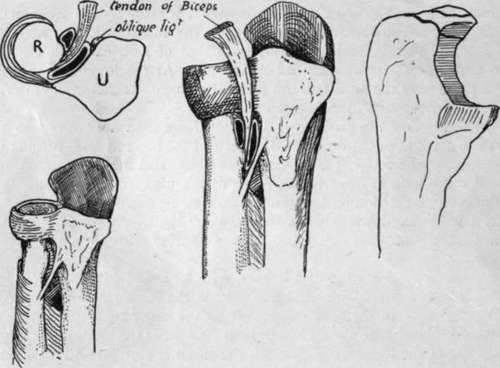
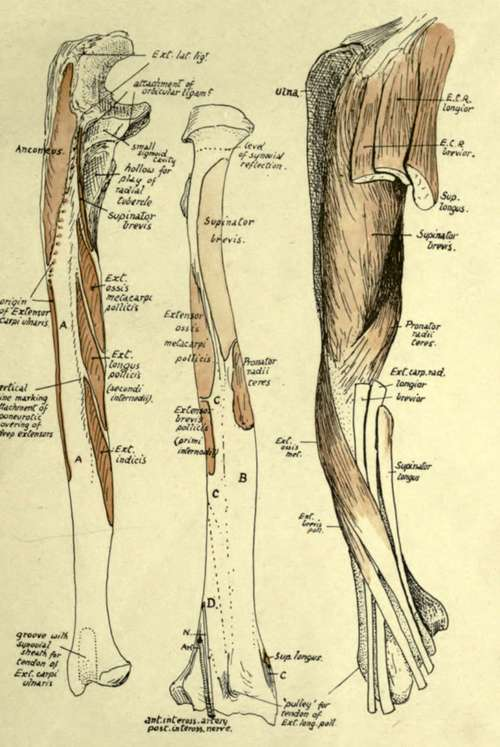

Radius
Description
This section is from the book "The Anatomy Of The Human Skeleton", by J. Ernest Frazer. Also available from Amazon: The anatomy of the human skeleton.
Radius
The concave upper surface of the head, covered by cartilage, is in contact with the nearly spherical capitulum of the humerus, and has a double movement on this, gliding during flexion and extension and rotating during pronation and supination. The circumference of the head is also covered by cartilage, and is altogether intraarticular and in synovial contact with the ulna internally and orbicular ligament for the rest of its extent : the synovial membrane comes down for a little distance below the level of the orbicular ligament, to be reflected on to the neck of the bone.
The tubercle has a rough posterior part into which the tendon of the Biceps is inserted, and a front part somewhat facetted, against which the tendon would play in pronation and flexion, and which is therefore guarded by a bursa that is partly enclosed behind by the tefldon. The oblicpie hgament runs downwards and outwards just below and internal to this structure to be attached to the radius. Articulate the two bones, and it will be seen that the tubercle of the radius lies in front of the ulnar origin of Supinator brevis : this can be seen in Fig. 78. During pronation the tubercle turns back and with the attached tendon glides on the front of these aponeurotic fibres, so that another bursa is placed on this aspect of the tendon and extends forward to come also between it and the oblique ligament : this bursa is frequently replaced by smooth " semi-bursal " areolar tissue.
The oblique hgament is possibly a modified part of the ulnar origin of Flexor longus pollicis : -the interosseous border of the radius commences just below and rather behind the insertion of the ligament, but as the fibres of the membrane arising here run in the opposite direction an interval is left between them covered in behind by the lower fibres of Supinator brevis, and the posterior interosseous artery runs through this interval to pass under the lower margin of the muscle.
The relations and attachments on the shaft of the bone are shown in Figs. 77 and 79. Examination of the shaft soon makes it evident that it has been moulded in a general wav, like so many bones, by the influence of the different muscle-groups that can affect it : thus the extensors and flexors, which act in planes more or less parallel with the bone, have hollow surfaces that afford origin to them, whereas the direct pressure of the Supinator brevis has a stronger convex surface of cylindrical shaft to withstand it. In this way the oblique line on the front surface may be looked on as a primary ridge, but there is also a secondary marking to be found on it, for the aponeurotic origin of Flexor sublimis : the origin is aponeurotic owing to the pressure of the overlying Pronator teres, and it may be very thin, and the secondary marking may not te apparent at first, though the finger as a rule is able to detect it. The origin of the muscle may be prolonged down to the outer border to within 2 or 3 inches of the lower end of the bone, and may be muscular here.
Fig. 78.-The right-hand drawing is from an ulna to show the small portion of the olecranon which is formed from the two epiphysial centres, and the others illustrate the position and relations of the bursa? on the tendon of Biceps. One of these is between tendon and radius, the other between tendon and oblique ligament internally and Supinator brevis behind, occupying the greater part of the triangular area below the lesser sigmoid cavity. This second bursa is often wanting.
Fig. 79.-1. Extensor surface of right ulna, divided by a vertical line which is made by the aponeurotic covering of the deep muscles ; these, therefore, lie between it and the interosseous edge. Thus the surface A is for superficial muscles ; it is covered by Ext. carpi ulnaris, but does not afford origin to it, and is continued below into the groove for this tendon. 2. Right radius from behind. B is covered by Radial Extensor tendons ; C by Ext. oss. met. and Ext. br. poll., which cross the radial tendons further out. D is for Ext. long, poll., which crosses the radial tendons in the hand (Fig. 93). 3. Outer side of radius with muscles and tendons in position. Compare with Fig. 80.
The oblique line behind may be also considered a primary structure with a secondary line on it that is often not appreciab'e.
The Supinator brevis is inserted as shown in the figures, but makes no marking on the bone save near the lower part of its area, for this is as a ru'e the only part where tendinous fibres are to be found in it. It extends down to the top of the impression for Pronator teres, which is more on the back than the front of the outer side of the bone.
The flexor surface has a very faint quadrate ridge, due only to attachment of aponeurotic fasciae of the muscle, and not, as in the ulna, to implantation of fibres of the interosseous membrane.
The Pronator quadratus has a large area of insertion, reaching out to the outer margin and down to the rough ligamentous ridge : internally it extends to the inner margin and round this on to the triangular area that lies above the sigmoid notch.
The extensor area gives origin to two of the deep muscles, and a faint indication of the position of the muscles running downwards and outwards may be found by the finger and sometimes by the eye. Below the surface for origin of Ext. brevis pollicis is an area covered by Ext. longus pollicis and Ext. indicis, but not giving origin to them : deep to these the anterior interosseous artery and posterior interosseous nerve he on the bone.
Continue to:
- prev: Ulna
- Table of Contents
- next: Radius. Continued